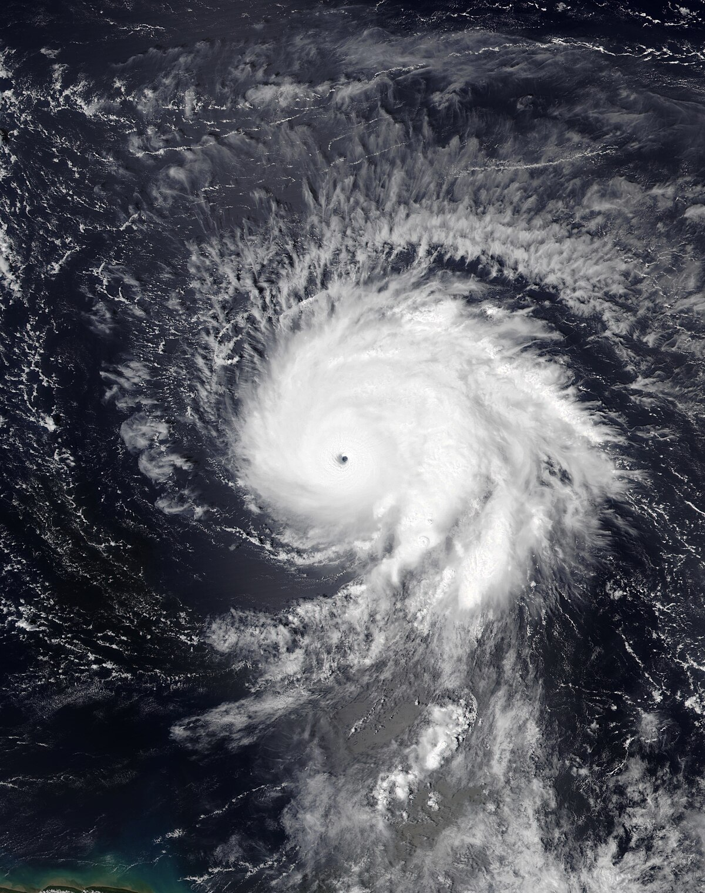

<!DOCTYPE html>
<html lang="en">
<head>
    <meta charset="UTF-8">
    <meta name="viewport" content="width=device-width, initial-scale=1.0">
    <title>Assesment 02</title>

    <link rel="stylesheet" href="https://unpkg.com/leaflet@1.9.4/dist/leaflet.css"
    integrity="sha256-p4NxAoJBhIIN+hmNHrzRCf9tD/miZyoHS5obTRR9BMY="
    crossorigin=""/>

    <script src="https://unpkg.com/leaflet@1.9.4/dist/leaflet.js"
    integrity="sha256-20nQCchB9co0qIjJZRGuk2/Z9VM+kNiyxNV1lvTlZBo="
    crossorigin=""></script>

    <script src="./hurricaneSamPoints.js"></script>

</head>

<body>
   
    <div id="map"></div>
    
    <style>
        #map { height: 500px; width: 900px;}
    </style>

<script>
    var map = L.map('map').setView([32.1, -61.0], 3);

    L.tileLayer('https://server.arcgisonline.com/ArcGIS/rest/services/World_Terrain_Base/MapServer/tile/{z}/{y}/{x}', {
	attribution: 'Tiles &copy; Esri &mdash; Source: USGS, Esri, TANA, DeLorme, and NPS',
	maxZoom: 13
    }).addTo(map);

    var popup = L.popup();
    
   //icon of point
    var samIcon = L.icon({ 
    iconUrl: './hurricaneIcon.png',   
    iconSize: [25,25],
    popupAnchor: [0,0] 
    });

    //for the popup
    var hurricaneSamIcon = L.icon({ 
    iconUrl: './hurricaneSamImage', iconSize: [5,5],
    popupAnchor: [0,0] 
    });

    var customPopup = "This is Hurricane Sam. <br/>"; 

    L.geoJSON(hurricaneSam, {pointToLayer: function (feature, latlng) {return L.marker(latlng, {icon: samIcon});}}).bindPopup(customPopup).addTo(map);

</script>


</body>
</html>
